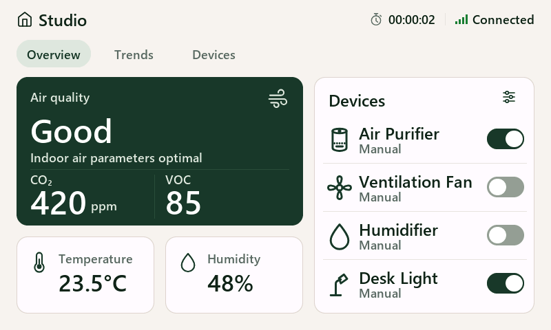
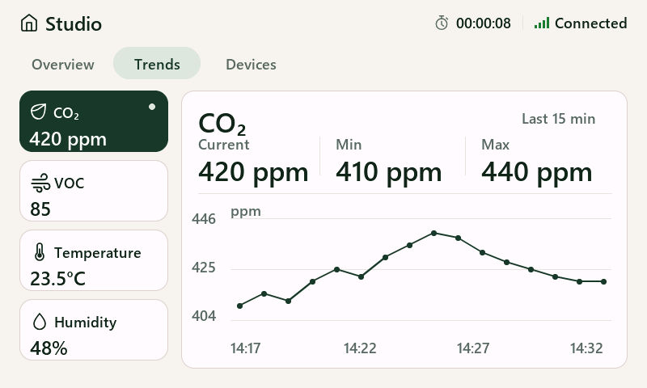
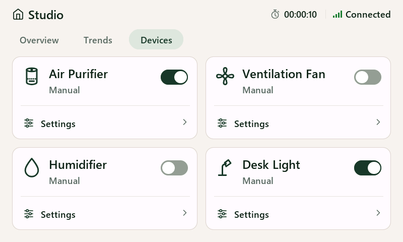
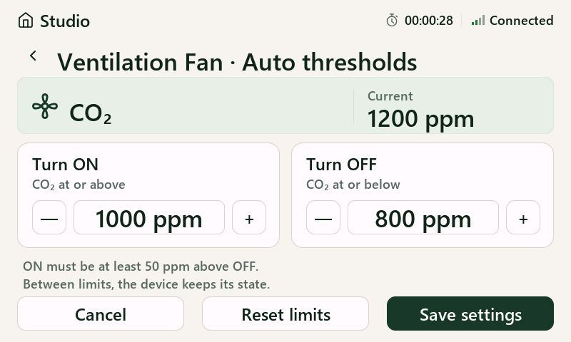
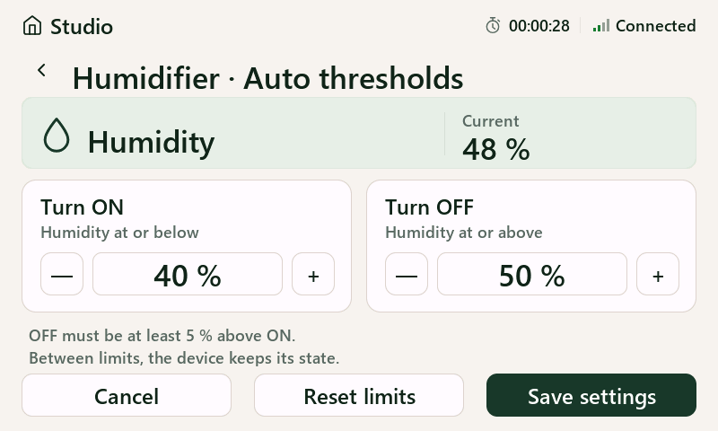

27 freshly generated standard captures match the submitted RAW hashes.
Additional boundary/recovery probes below reproduce overlaps despite the submitted audit returning PASS.
The normal seven fixtures below are the submission's unmatched Manual/1200 states; this is disclosed, not silently corrected.
Overview
Approved original, normalized to 800×480Rebuilt native submission

Trends
Approved original, normalized to 800×480Rebuilt native submission

Devices
Approved original, normalized to 800×480Rebuilt native submission

Settings
Approved original, normalized to 800×480Rebuilt native submission
Auto CO2
Approved original, normalized to 800×480Rebuilt native submission

Auto RH
Approved original, normalized to 800×480Rebuilt native submission

Invalid VOC
Approved original, normalized to 800×480Rebuilt native submission